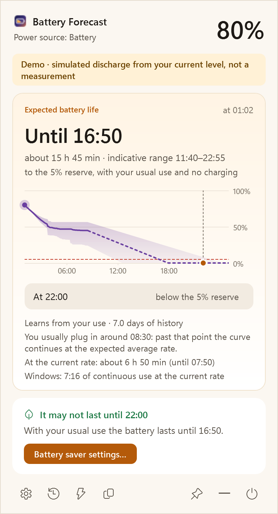
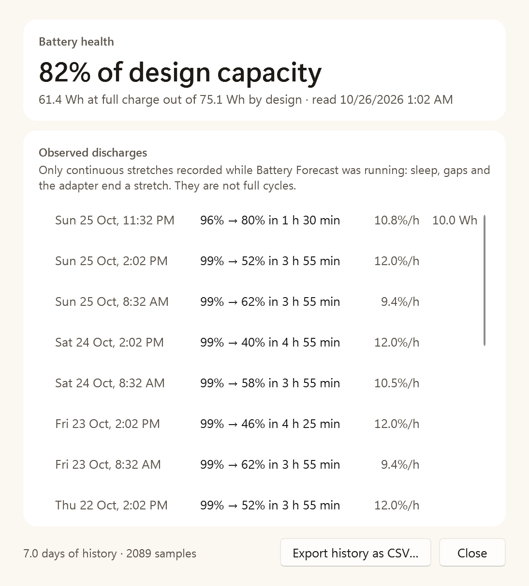
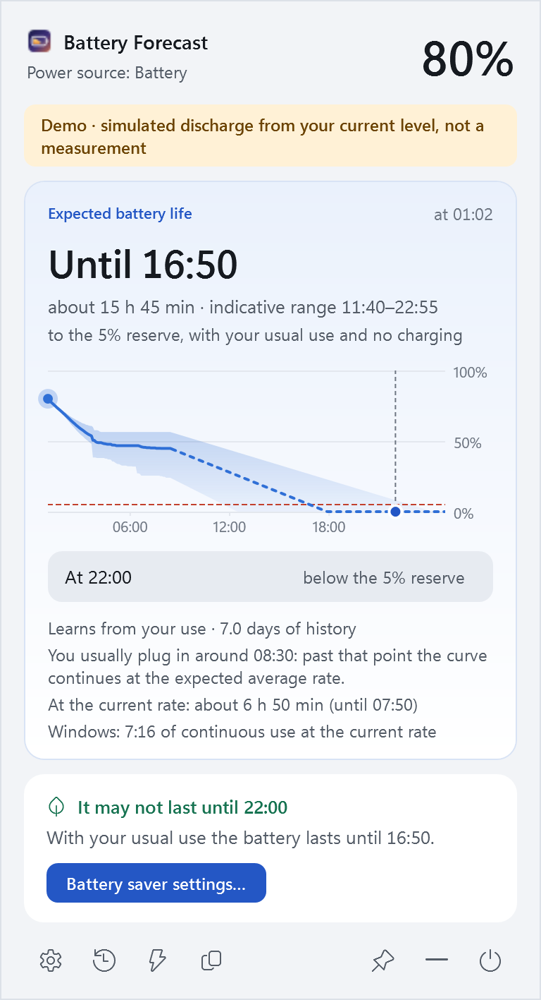
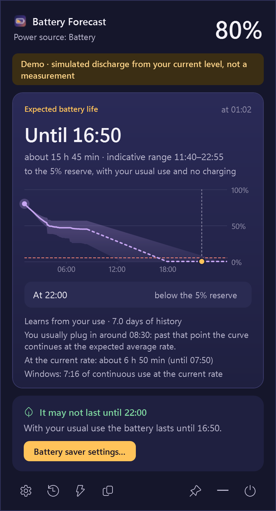
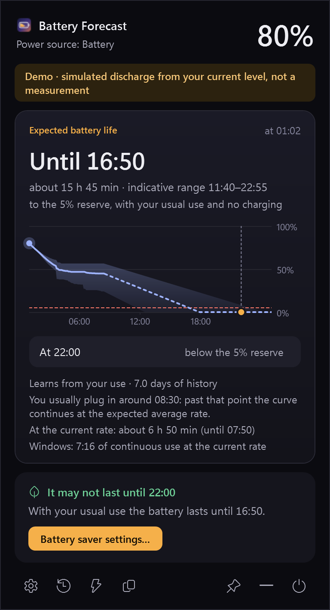
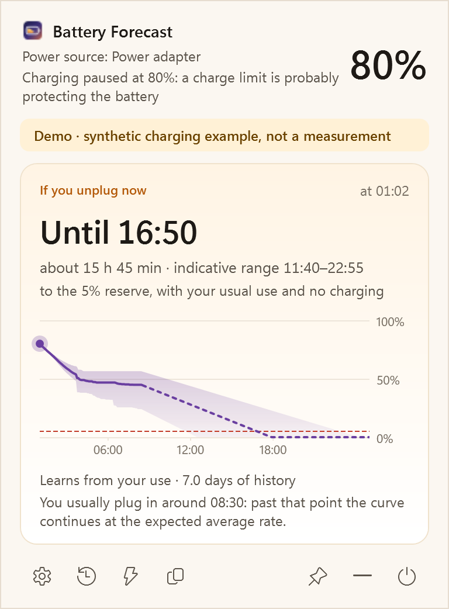

Until when
The time your battery reaches the reserve, with an honest range from cautious to optimistic. Never a fake exact number.
How long will your laptop really last today? An AI forecast that learns how you use your PC, and runs entirely on it.
Free and open source · No account · Works offline

Demo mode: the discharge in this screenshot is simulated from a real battery level.
Made for your day
Windows tells you a percentage. Battery Forecast tells you what it means for the rest of your day.
The time your battery reaches the reserve, with an honest range from cautious to optimistic. Never a fake exact number.
How much will be left at 22:00, or any time you choose. And a gentle hint to turn on battery saver if it won't last.
About 60, 30 and 15 minutes before the reserve, at low battery, when charged, or when something drains unusually fast. Once each.
How it works
Every minute Battery Forecast records your battery level. A time-series AI model, Timestral by Mistral AI, reads weeks of that history and forecasts the next 24 hours.

Light on your battery
The model is not a background service. It starts to compute, answers, and closes. With battery saver on it never starts by itself.
Four themes
Dawn and Mist for light days, Dusk and Midnight for the evening, or simply follow Windows. Italian and English.



Your schedule, your machine
Choose your times, inspect the curve and see the system context behind the estimate.
Hover over the chart to move its dot and read the date, time, expected percentage and indicative range. Keyboard arrows work too.
Type any HH:mm target and up to four extra times. Open and close the panel with a shortcut you record (initially Ctrl+Alt+B), or just rest the pointer on the icon. Make the panel as large as you like.
Choose a charging target from 50–100%. While charging, the same AI learns from your past charges and tells you when you will reach it, slowdown near full included, next to the current charging rate. It does not control the hardware. When a charge limit holds the battery, it shows how long it would last if you unplugged now.
Optionally record CPU load and frequency, memory, battery watts, brightness, power profile and available temperatures. Timestral receives usable historical channels; future values are not invented.
Custom alert thresholds, quiet hours, chart visibility and a keep-open preference. Copy a summary or export battery and sensor CSV files.
Create a local diagnostic ZIP without battery history or logs. Nothing is uploaded automatically. Missing sensors stay unavailable; an ACPI thermal zone is not labelled CPU temperature.

Charging and sensor context are experimental. Functional tests use the real local model; accuracy gains have not been established.
Private by design
Python, PyTorch and the model ship inside the installer. Forecasts work with the network off.
Download
One installer per architecture, for your user only: no administrator rights needed.
Windows 10 (2004) or 11 · Intel/AMD x64 or ARM64 · about 280 MB download
.sha256 from the release page:
Get-FileHash .\BatteryForecast-Setup-*.exe
No forecast of the future can be. Battery Forecast shows a central estimate with a range, says which model produced it, and tells you when it is still learning. How accurate it is on real laptops is being measured during the preview.
It includes everything needed to run the AI offline: a private Python runtime, PyTorch for CPU and the Timestral weights. Nothing else is downloaded later.
No. It only reads the battery. When battery saver would help, it opens the Windows settings page for you.